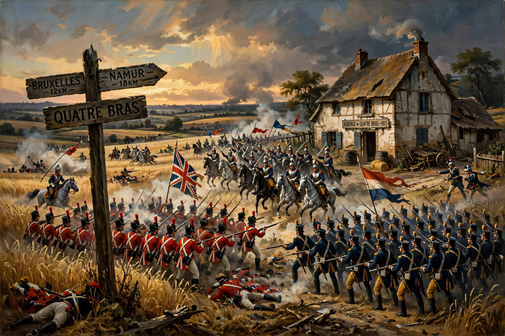

The Battle of Quatre Bras was fought on 16 June 1815, as a preliminary engagement of the Waterloo campaign. It was fought at the crossroads of Quatre Bras in present-day Belgium, where the road from Charleroi to Brussels crosses the road between Nivelles and Namur. Marshal Michel Ney, commanding the left wing of Napoleon's Armée du Nord, attacked the Anglo-Allied army concentrating there under the Prince of Orange and the Duke of Wellington — who arrived during the afternoon to take personal command. The battle was a tactical draw, but a strategic French failure: Ney did not seize the crossroads, so Wellington's army remained in communication with Blücher's Prussians, and when Wellington learned the Prussians had been beaten at the Battle of Ligny the same day, he was able to withdraw in good order on 17 June to the position at Waterloo he had already chosen.
| Battle of Quatre Bras | |
|---|---|
 | |
| Date | 16 June 1815 |
| Location | Quatre Bras, present-day Belgium |
| Result | Tactically inconclusive; Anglo-Allied army holds the crossroads, then withdraws to Waterloo on 17 June |
| Belligerents | French Empire — versus — United Kingdom, Netherlands, Hanover, Brunswick, Nassau |
| Commanders | Michel Ney, Comte d'Erlon (absent for much of the day) — versus — Duke of Wellington, Prince of Orange (William II), Frederick William, Duke of Brunswick † |
| Strength | About 25,000 available (of some 45,000 in the wing) — versus — growing from ~8,000 to about 36,000 during the day |
| Casualties | Roughly 4,000–5,000 on each side |
Napoleon's plan for 16 June required Ney to push north, take Quatre Bras, and then turn east to crush Blücher between two French wings while Napoleon attacked him frontally at Ligny. Ney, appointed only days earlier and uncertain of his instructions, advanced slowly on 15 June and halted before the crossroads, which were held by a thin screen of Dutch-Belgian troops of Perponcher's division under the Prince of Orange, who had refused to obey orders to abandon the position.
Ney attacked in the early afternoon of 16 June against what he believed was a minor outpost, only to meet steadily arriving Anglo-Allied reinforcements marching down the Brussels road. Fighting raged around the farms of Gemioncourt and Piraumont and in the Bossu wood: Jérôme Bonaparte's division drove the Allies out of the wood, French cavalry — Kellermann's cuirassiers in a furious late charge — broke a Highland regiment's forming square and briefly reached the crossroads itself, and the Duke of Brunswick was killed leading his black-coated infantry. Wellington, who had ridden to confer with Blücher that morning and promised support he could not in the event send, arrived around 15:00 and gradually fed in Picton's and Alten's divisions and Brunswick and Nassau troops until the Allies outnumbered the French.
The affair was distorted by one of the campaign's most notorious episodes: d'Erlon's I Corps, ordered by Napoleon to march from Ligny to strike the Prussian rear, was recalled by Ney by an imperious personal order, marched and countermarched between the two battlefields, and fired no decisive shot at either — its absence robbed Ney of the infantry needed to finish the battle at Quatre Bras and Napoleon of the stroke that might have destroyed Blücher.
By nightfall the French had recovered most of the ground lost late in the day, and neither army had been driven from the field. But the news of Ligny settled everything: Wellington withdrew northward on 17 June, in pouring rain, covered by Uxbridge's cavalry rearguard, to the ridge of Mont-Saint-Jean south of Waterloo — the position from which, with Prussian help, he would fight the campaign's decision on 18 June.